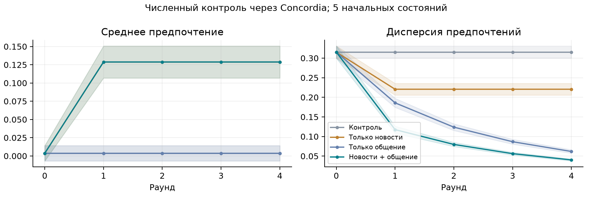
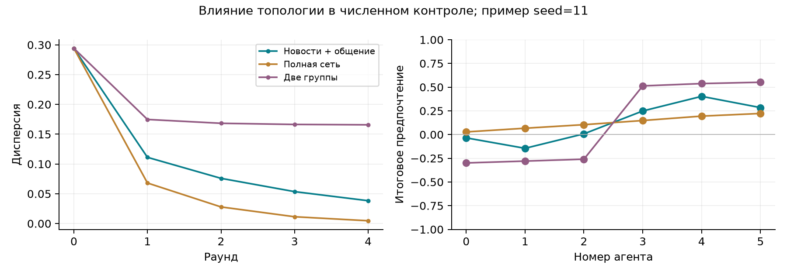
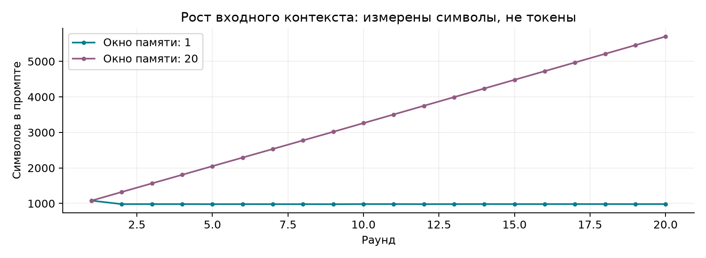

Первые эксперименты с коллективными предпочтениями
Минимальный прототип на Concordia 2.4.0 | 21 ноября 2026 года
Исходная постановка: файл «идеи_для_лабы.pdf», 9 страниц. Выбрана первая идея: проверить, как внешняя информация, общение, память и социальная сеть меняют индивидуальные предпочтения и коллективные показатели. Вторая идея о конфликтах зафиксирована как возможное продолжение, но в эти эксперименты не включена.
Основной результат
Техническая реализуемость небольшого прототипа подтверждена. Реальные агенты Concordia получают наблюдения, хранят историю, собирают контекст, вызывают модель через общий интерфейс и возвращают валидируемые действия. Можно менять экспериментальные условия, сохранять полные журналы и повторять расчёты.
По просьбе пользователя работа выполнена без LLM-ключа. Вместо языковой модели использована детерминированная заглушка с открыто заданным численным правилом. Поэтому результаты ниже подтверждают работу инфраструктуры и контрольных измерений. Они не подтверждают реалистичность поведения LLM, исходную социальную гипотезу или научную новизну.
| Что выполнено | Подтверждённый результат |
|---|
| Основная серия | 40 запусков: 8 условий × 5 начальных состояний; все завершились |
| Вызовы в основной серии | 960 вызовов заглушки; 0 обращений к внешней LLM |
| Расчёт вне фреймворка | Все 40 траекторий совпали с расчётом того же правила |
| Дополнительные пробы | 2 запуска по 20 раундов; 240 вызовов заглушки |
| Проверки кода | 14 автоматических проверок успешно пройдены |
| Подключение API | Контракт проверен с подставным транспортом; реальный API отложен |
Отчёт сопровождается исходным кодом, точными конфигурациями, CSV со сводными результатами, JSON-журналами каждого запуска и инструкцией для последующего подключения ключа. Основная серия, длинные пробы, smoke-запуск и тесты учитываются отдельно; их числа не складываются в «число независимых LLM-экспериментов».
1. От идеи к проверяемому сценарию
Почему выбран небольшой неполитический пример
В исходном документе динамика предпочтений рассматривается шире выборов: упомянуты продукты, технологии и коллективные решения. Для первого прототипа выбрана вымышленная публичная библиотека. Сообщество выбирает между приоритетом цифрового доступа (A, +1) и печатных книг (B, -1). Это сохраняет механизмы первой идеи и позволяет обойтись без загрузки и подготовки эмпирических данных.
| Элемент | Реализация |
|---|
| Население | 6 агентов; роли: студент, родитель, библиотекарь, учитель, пенсионер, разработчик |
| Начальные позиции | [-0.8, -0.5, -0.2, 0.2, 0.5, 0.8] плюс равномерное отклонение до 0.05 |
| Различия агентов | Доверие к внешнему источнику в диапазоне [0.35, 0.90]; роль и исходная позиция |
| Внешняя информация | Один вымышленный информационный импульс в первом раунде, значение +0.8 или -0.8 |
| Общение | Сообщения соседей и их явно заявленная позиция из предыдущего раунда |
| Длительность | 4 раунда в основной серии; 20 в пробах роста контекста |
| Память | В контекст попадают события последних 1, 4 либо 20 раундов |
| Действие | JSON с полями opinion и message; численная позиция и короткий публичный аргумент |
Вопросы первого этапа
Можно ли изолированно включать новости и общение? Доходит ли сообщение только до нужных соседей? Сохраняется ли состояние между раундами? Влияет ли окно извлечения памяти на доступные наблюдения? Можно ли заменить заглушку на API-модель без переписывания среды? Как растут контекст и объём журналов?
Пока не реализованы биографии, накопленный жизненный опыт, уверенность, изменение доверия, частные диалоги и выбор контактов самим агентом. Роль присутствует в профиле, но численное правило её не использует. История собственных позиций доступна в журнале эксперимента; в промпт передаётся текущая позиция, а не вся собственная траектория. Это упрощения прототипа относительно исходной идеи.
2. Выбор фреймворка и границы проверки
Проведён краткий просмотр официальных материалов трёх предложенных инструментов. Установка и запуск выполнены только для Concordia. Следующая таблица отражает выбор инструмента для этого прототипа, а не сравнительный эксперимент по производительности.
| Инструмент | Основание для выбора / ограничения проверки |
|---|
| Concordia | Компонентная сборка агентов и интерфейс LanguageModel подходят для небольшой управляемой симуляции. Пакет установлен и проверен на Windows. Выбран для реализации. |
| AgentSociety 2 | Документация описывает LLM-native платформу, async SDK и исследовательские инструменты; доступны OpenAI-совместимые подключения через LiteLLM. В этой работе просмотрена документация установки; запуск не выполнялся. |
| OASIS | Официальный quickstart ориентирован на социальные симуляции, включая готовые данные и OpenAI/VLLM-подключения. Пакет camel-oasis не устанавливался. Для текущего абстрактного выбора специализированная социальная платформа не понадобилась. |
Основания: официальные README Concordia [2], документация установки AgentSociety 2 [3] и quickstart OASIS [4]. Оценка соответствия сценарию является инженерным выводом этой работы. Нельзя заключить, что другие инструменты хуже, медленнее или сложнее: они не запускались.
Что действительно используется из Concordia
В прототипе работают EntityAgent, ListMemory, ObservationToMemory, ConcatActComponent, ActionSpec и абстракция LanguageModel. Это запуск настоящих компонентов установленного пакета, а не самостоятельная имитация его API. Свой DecisionContext задаёт предметную область, формирует извлекаемый контекст и валидирует ответ.
Среда и синхронное расписание раундов написаны в проекте. Стандартные движки Concordia и Game Master изучены по установленным исходникам, но их run_loop в эксперименте не используется. Для фиксированной сети и четырёх раундов детерминированный планировщик проще контролировать и не требует дополнительных вызовов LLM на разрешение событий.
Версия имеет значение
Установлена gdm-concordia 2.4.0, Python 3.12.14. Пути из старых примеров simple_act_component.py и memory_component.py не подтвердились в текущей ветке официального репозитория. Реализация опирается на установленный пакет. Версии зависимостей и SHA-256 изученных модулей сохранены в artifacts/setup/runtime.json; полный снимок окружения - в requirements-lock.txt.
3. Агенты, память, среда и взаимодействия
| Слой | Как устроен |
|---|
| Агент | EntityAgent владеет компонентами и проводит их через фазы наблюдения, действия и обновления. Профиль и текущая позиция находятся в DecisionContext. |
| Наблюдение | Среда вызывает observe с JSON-событием. ObservationToMemory помещает строку в буфер ListMemory, который фиксируется на фазе UPDATE. |
| Извлечение памяти | DecisionContext читает сохранённые события и оставляет новости/сообщения, попадающие в окно последних H раундов. Технические tick-события не передаются модели. |
| Сборка действия | ConcatActComponent объединяет контекст и запрос действия, вызывает LanguageModel.sample_text. Префикс с именем отключён, чтобы не портить JSON. |
| Фиксация позиции | После проверки схемы DecisionContext сохраняет opinion. Публичное message передаётся соседям на следующем раунде. |
| Среда | Содержит граф, номер раунда, информационный импульс, снимок предыдущих действий и накопленные метрики. Модель не получает скрытый глобальный вектор позиций. |
Порядок одного раунда
1. Взять снимок позиций и сообщений раунда r-1.
2. Доставить tick, новости и сообщения всем адресатам.
3. Вызвать act у каждого агента.
4. Проверить все ответы и собрать новые позиции.
5. Посчитать метрики и сохранить траекторию.
Все наблюдения формируются до первого действия текущего раунда. Поэтому агент, вызванный последним, не получает информацию о решениях первых агентов в этом же раунде. Проверка обратного порядка вызова сохранила ту же траекторию. Сами компоненты Concordia могут исполняться параллельно внутри агента; вызовы агентов в прототипе последовательные.
Отличие хранения от видимого контекста
ListMemory хранит весь журнал наблюдений. Параметр memory_rounds ограничивает только извлечение для очередного промпта. Это не удаление памяти и не моделирование забывания человека. Состояния сериализуются после завершения операции, в фазе READY; продолжение после JSON-сохранения проверено на совпадение с непрерывным исполнением.
В стандартной архитектуре Concordia Game Master задаёт наблюдения и разрешает заявленные действия; движок организует ход исполнения [2]. В текущем прототипе эти обязанности выполняет собственный детерминированный код среды. Ассоциативный поиск и embeddings не используются: для проверки доставки и памяти достаточно списка событий.
4. Численный контроль и метрики
Прозрачное правило вместо LLM
Пусть x - позиция агента до текущего раунда, q - его доверие источнику, H - окно памяти. Для каждого доступного раунда t считаются средняя позиция новостей n(t) и средняя позиция соседей p(t). Отсутствующий канал даёт нулевой вклад. Более старые наблюдения получают вес 0.5 в степени возраста.
shift(t) = 0.25*q*(n(t)-x) + 0.30*(p(t)-x)
x_new = clip(x + sum_t(0.5**age(t) * shift(t)), -1, 1)
Округление: 6 знаков после запятой.
Это заданная исследователем линейная модель влияния с ограничением диапазона и затуханием истории, близкая по устройству к усредняющим моделям динамики мнений. Она не заявляется как калиброванная модель людей. Коэффициенты 0.25 и 0.30 выбраны для технической демонстрации; подбор по реальным данным не выполнялся. Публичная фраза заглушки просто сообщает новую численную позицию.
Для проверки оркестрации тот же закон реализован в отдельном цикле без агентов Concordia. Функция численного обновления общая. Совпадение траекторий подтверждает сборку входов и перенос состояния, но не является независимой валидацией формулы. Поэтому дополнительно проверен аналитический ответ одного новостного шага и неизменность позиций в пустом контроле.
| Показатель | Определение и смысл |
|---|
| Средняя позиция | Среднее x по шести агентам: направление общего сдвига |
| Дисперсия | Среднее (x - mean(x))²: общий разброс; сама по себе не доказывает поляризацию |
| Средний модуль сдвига | Среднее |x_final - x_initial|: масштаб индивидуального изменения |
| Несогласие на рёбрах | Среднее |x_i - x_j| по связям: локальные различия только среди соседей |
| Доли A/B/неопределившихся | A: x > 0.1; B: x < -0.1; нейтральная зона включает границы |
| Прямые переходы | Число агентов, сменивших исходную сторону A↔B к финалу; нейтральные переходы не считаются |
Дополнительно сохраняются средний |x|, индивидуальные траектории, длительность запуска, время каждого вызова и точные промпты. В отсутствие LLM токены и денежная стоимость не измерялись. Длина контекста в следующих разделах измеряется в символах.
5. Протокол основной серии
| Условие | Новости | Общение / сеть | Окно |
|---|
| control | Нет | Нет; кольцо для метрик | 1 |
| news_only | +0.8 в раунде 1 | Нет | 1 |
| peers_only | Нет | Кольцо | 1 |
| combined | +0.8 в раунде 1 | Кольцо | 1 |
| combined_memory4 | +0.8 в раунде 1 | Кольцо | 4 |
| combined_complete | +0.8 в раунде 1 | Полный граф | 1 |
| combined_segregated | +0.8 в раунде 1 | Две отдельные тройки | 1 |
| negative_news | -0.8 в раунде 1 | Кольцо | 1 |
Каждое условие выполнено для seed 11, 22, 33, 44, 55. Во всех условиях с одним seed начальные позиции и доверие совпадают. Seed меняет только исходную неоднородность. Заглушка детерминирована: пять запусков - это пять начальных состояний, а не пять случайных генераций модели. Общий объём: 40 запусков, 4 раунда, 6 агентов, 960 вызовов заглушки.
Контроль экспериментальных различий
Базовый набор из четырёх условий отделяет информационный импульс от общения. Проверка memory4 меняет только окно извлечения; complete и segregated меняют только граф относительно combined. Обратная новость проверяет реакцию на знак входного сигнала. Начальная выборка не зеркально симметрична, поэтому равенство абсолютных эффектов +0.8 и -0.8 не предполагается.
Кольцо имеет шесть неориентированных рёбер и по два соседа у агента. Полный граф имеет 15 рёбер и по пять соседей. Сегрегированная сеть состоит из двух полных троек без связей между ними; агенты с исходно отрицательными и положительными позициями разделены. Внутри раунда передаётся по одному сообщению по каждому направлению ребра.
Что фиксируется в каждом запуске
JSON содержит конфигурацию, профили, список рёбер, все доставленные события, позиции и метрики по раундам, точный текст каждого промпта и ответа, SHA-256 промпта, параметры вызова, задержку и конечные состояния всех агентов. Сводка сохранена в summary.csv, средние и стандартные отклонения - в aggregate.json. Файлы предыдущих запусков защищены от перезаписи.
Отдельный smoke-запуск проверяет один раунд (6 вызовов). Две длинные пробы памяти и автоматические тесты не входят в 40 запусков основной серии. Эмпирические данные ANES и другие корпуса из исходной идеи не загружались; сопоставление с людьми ещё не выполнялось.
6. Полученные результаты основной серии
| Условие | Средняя позиция ± SD | Дисперсия | |Сдвиг| | По рёбрам |
|---|
| Контроль | 0.0036 ± 0.0105 | 0.3154 | 0.0000 | 0.5382 |
| Только новости | 0.1288 ± 0.0220 | 0.2206 | 0.1263 | 0.4489 |
| Только общение | 0.0036 ± 0.0105 | 0.0618 | 0.2679 | 0.2303 |
| Новости + общение | 0.1288 ± 0.0220 | 0.0402 | 0.3304 | 0.1865 |
| Память 4 раунда | 0.1717 ± 0.0257 | 0.0204 | 0.3976 | 0.1390 |
| Полная сеть | 0.1288 ± 0.0220 | 0.0050 | 0.4402 | 0.0954 |
| Две группы | 0.1288 ± 0.0220 | 0.1759 | 0.2306 | 0.0268 |
| Обратная новость | -0.1227 ± 0.0188 | 0.0403 | 0.3273 | 0.1862 |
Итоги после четырёх раундов. Усреднение по пяти начальным состояниям. SD - стандартное отклонение между этими состояниями, не доверительный интервал. Остальные столбцы показывают средние; их SD сохранены в aggregate.json. Статистические тесты значимости не проводились.

Контроль не меняет позиции: средний модуль сдвига равен нулю. Новостной импульс сдвигает среднюю позицию к A примерно на 0.1251. В кольце общение снижает разброс при почти неизменном среднем. В совместном условии средняя позиция близка к news_only, а разброс ниже. Это ожидаемые свойства выбранного правила, а не открытие о поведении сообщества.
Для регулярных симметричных сетей вклад усреднения соседей сохраняет среднее, пока не срабатывает ограничение диапазона. Поэтому равенство средних у условий с разной сетью объясняется конструкцией контроля. Небольшие расхождения на последних знаках связаны с округлением.
7. Топология: локальное согласие и общий разброс

При полной сети финальная средняя дисперсия равна 0.00495, при кольце - 0.04023, при двух раздельных группах - 0.17591. В рамках усредняющего правила широкое смешивание быстрее сближает позиции. Разделение агентов по исходному знаку оставляет две группы по разные стороны шкалы.
В примере seed=11 финальные позиции в двух группах составляют примерно [-0.299, -0.280, -0.260] и [0.513, 0.538, 0.552]. Внутри каждой тройки расхождения малы, но между тройками сохраняется большой разрыв. Среднее несогласие на существующих рёбрах равно лишь 0.02677 при высокой общей дисперсии 0.17591.
Практический вывод для анализа
Одного показателя «согласие соседей» недостаточно. В изолированных группах он может показывать почти полное согласие, хотя сообщество разделено. Для будущих LLM-экспериментов нужно одновременно смотреть индивидуальные траектории, глобальное распределение, структуру графа и межгрупповые различия. Нельзя называть низкую дисперсию доказательством полезного консенсуса, а высокую - достаточным доказательством социальной поляризации.
Ограничения этого сравнения
Топология фиксирована до начала запуска; агенты не выбирают собеседников и не меняют связи. Позиции соседей доступны как явные численные заявления рядом с текстом. Поэтому опыт проверяет распространение заявленных позиций и работу сетевого планировщика, а не чисто текстовое убеждение. Для содержательной версии следует отдельно сравнить сообщения с численными самооценками и сообщения без них.
Выводы о сетях ограничены шестью агентами и данным правилом. Масштабирование, асинхронный обмен, эхо-камеры с изменяемыми связями и неодинаковой частотой контактов ещё не проверены.
8. Память и рост стоимости контекста
В основной серии окно из четырёх раундов даёт среднюю финальную позицию 0.17168 против 0.12878 при одном раунде. Новость продолжает попадать в контекст после первого раунда и получать затухающую численную нагрузку. Одновременно сохраняются старые сообщения соседей. Поэтому различие combined_memory4 включает оба канала; отдельная проверка в тесте с отключённым общением изолирует перенос новостного импульса.

| Измерение за 20 раундов | Окно 1 | Окно 20 |
|---|
| Вызовы заглушки | 120 | 120 |
| Ср. символов в первом раунде | 1079 | 1079 |
| Ср. символов в последнем раунде | 982 | 5700 |
| Всего входных символов | 118299 | 406381 |
| Наблюдений в хранилище агента 0 | 61 | 61 |
Полная история увеличила суммарный объём переданного текста примерно в 3.44 раза. 61 запись в памяти агента: 20 tick-событий, 40 сообщений соседей и одна новость. Узкое окно сократило вход модели, но не объём хранимой истории. Это важное разделение для нашей библиотеки: хранение эпизодов, выбор релевантных воспоминаний и сборка промпта должны настраиваться независимо.
Длительность длинных проб составила около 0.89 и 0.90 секунды. Это скорость локальной заглушки. Она ничего не говорит о задержках, цене и пропускной способности LLM API. Преобразовывать символы в токены фиксированным коэффициентом для оценки бюджета здесь некорректно.
9. Надёжность и готовность LLM-подключения
| Группа проверок | Что установлено |
|---|
| Контроль и аналитика | Пустое условие сохраняет исходные позиции; один новостной шаг совпадает с ручной формулой; метрики проверены на известных числах. |
| Повторение и порядок | Совпадают траектории и SHA-256 промптов при повторе; обратный порядок действий не меняет результат. |
| Изоляция и память | Нет доставки между раздельными тройками; история влияет после первого раунда; восстановленный агент продолжает как непрерывно работавший. |
| Ошибки | Неверный JSON, NaN, bool вместо числа, выход за диапазон, пустая фраза и лишние поля отвергаются. При исчерпании бюджета сохраняется частичный журнал. |
| Адаптер | Подставной транспорт проверяет тело Chat Completions, разбор ответа, метаданные, usage, один учёт ошибки и отсутствие ключа в журнале. |
Все 14 тестов пройдены. Это тесты прототипа, не полный тестовый набор Concordia. Отдельно pip check не выявил нарушений зависимостей. Проверка live-режима без заполненного .env ожидаемо завершилась ошибкой конфигурации до отправки запроса; результат сохранён в live_configuration_check.json.
Подготовленный адаптер
TracedModel реализует Concordia LanguageModel. В live-режиме выполняет POST на LLM_BASE_URL + /chat/completions с Bearer-ключом, именем модели, системным и пользовательским сообщениями. Ответ ожидается в choices[0].message.content. Есть ограничение числа вызовов, таймаут и журнал параметров; токены записываются, если провайдер возвращает usage.
По умолчанию temperature=0 и предел ответа 300 токенов. Параметр LLM_TOKEN_FIELD позволяет выбрать max_tokens либо max_completion_tokens, а LLM_SEND_TEMPERATURE отключает передачу temperature. Это точки настройки, а не гарантия совместимости с конкретной моделью. Автоматические повторы отключены: ошибка останавливает запуск и остаётся в журнале. Частично выполненный раунд не считается завершённым.
Что ещё не подтверждено
Не проверены авторизация реальным ключом, доступность модели, сетевой запрос к провайдеру, поддержка параметров, валидность реальных ответов и фактический расход токенов. GPT-Luna через Codex не испытывалась. OAuth, Codex CLI, Responses API и streaming не реализованы. Имя модели из интерфейса нельзя считать проверенным API-идентификатором без отдельного успешного вызова. Текущий результат - готовая интеграционная точка и контрактные тесты, а не завершённая интеграция с LLM.
10. Сложность проведения и журнал затруднений
Оценка сложности инженерная: 1 - штатная операция; 2 - небольшая настройка; 3 - потребовались изучение API или специальная проверка; 4 - существенная методическая либо интеграционная задача; 5 - отдельный исследовательский этап. Это оценка текущей работы, не измеренные человеко-часы.
| Этап | Оценка | Наблюдение / решение |
|---|
| Чтение исходной идеи | 1/5 | Файл найден в Downloads; извлечены все 9 страниц. Исправлена кодировка вывода Python на UTF-8. |
| Подготовка среды | 2/5 | Python не разрешался коротким именем; использован bundled Python 3.12.14 и локальный venv. |
| Установка зависимостей | 2/5 | Первый pip завершился WinError 10013 из-за ограничений сети. После разрешённого сетевого запуска установка прошла. Это не ошибка Concordia. |
| Разбор архитектуры | 3/5 | Пути старых примеров не совпали с актуальными; изучены классы установленной версии и их фазы. |
| Среда и контрольные условия | 3/5 | Потребовались снимки раундов, адресная доставка, независимый расчёт оркестрации и строгая схема ответа. |
| Проведение серии | 1/5 | После подготовки все 40 запусков прошли автоматически; сумма длительностей симуляций 6.98 с. |
| Память и журналирование | 3/5 | Нужно различать хранимую историю и вход модели; полные промпты существенно увеличивают журналы. |
| Живой API | Не оценено | Без ключа проведены только контрактные проверки. Нельзя оценить трудность конкретного провайдера. |
| Научная валидация | 4-5/5, прогноз | Потребуются реальные LLM-запуски, проверка смещений, чувствительности и сравнение с данными. |
Основная серия содержит 1 980 доставленных информационных событий, без tick. Файлы её результатов занимают около 2.84 МБ. Это объём подробных JSON с промптами, а не память процесса. По мере роста числа агентов и раундов повторы контекста будут увеличивать дисковый объём; понадобится политика сжатия или хранения промптов по хешу.
Время исследовательской и программной работы по этапам не измерялось, поэтому точные трудозатраты не приводятся. Предложения по дальнейшему плану являются оценками объёма работ, а не протоколом уже затраченного времени.
11. Что перенести в свою систему / библиотеку
| Решение | Чем полезно и что нужно добавить |
|---|
| Компонентный агент | Отделить профиль, наблюдения, память, принятие решения и исполнение. Можно менять один механизм без переписывания агента. |
| Явный жизненный цикл | Сохранять состояние после завершения фаз; не читать изменяемую память во время её фиксации. Добавить строгую проверку checkpoint и версии схемы. |
| Единый интерфейс модели | Поддерживать заглушку, запись/повтор ответов и API-модели через одинаковый контракт. Нужны capability-профили провайдера вместо ручных переключателей. |
| Раздельные store/retrieve/context | Хранить полный эпизодический журнал, извлекать под задачу, отдельно ограничивать токенный бюджет. Добавить забывание, суммаризацию и семантический поиск. |
| Среда как источник истины | Сеть, новости и доступные действия должны задаваться отдельно от модели; наблюдения доставляются явно по адресатам. |
| Воспроизводимость | Обязательны seed, версии кода и пакетов, конфигурация, точные промпты/ответы и параметры генерации. Нужны идентификаторы модели и поддержка недетерминированности провайдера. |
| Контролируемое исполнение | Число запросов, таймаут, валидация и частичные результаты уже полезны. Добавить денежный бюджет, rate limits и контролируемую политику повторов. |
Чего не хватает для исходной идеи
Нужен стандартный формат событий с источником, временем, адресатами и provenance: модель должна различать собственный опыт, внешнюю информацию и утверждения соседа. Нужны история изменения доверия, память отношений между парами агентов, развёрнутые профили опыта и измерение уверенности. Для второй идеи понадобятся действия редактирования, отката, ухода и посредничества, а также отдельное состояние общей статьи.
Нужен единый экспериментальный слой: факторные условия, парные начальные состояния, сохранение промежуточных результатов и сравнение нескольких LLM. Сейчас это написано в скрипте проекта; готовый исследовательский протокол не возникает автоматически из компонентной архитектуры.
Изученные возможности Concordia позволяют собрать требуемую минимальную механику. При этом желательная научная библиотека должна дополнить агентный движок средствами измерения, отслеживания информационных воздействий и проверки устойчивости выводов. Недостатки выше относятся прежде всего к нашему прототипу; отсутствие функции во всём фреймворке не утверждается без отдельного аудита.
12. Следующий этап и критерии решения
Порядок первых LLM-экспериментов
Сначала заполнить локальный .env и выполнить один smoke: 6 агентов × 1 раунд, максимум 6 запросов. Критерий успеха: каждый запрос принят провайдером; все 6 ответов проходят схему; записаны точное имя модели, параметры, задержки и доступный usage. Если есть ошибка, исследовать её до запуска серии. Реальные ответы могут нарушать JSON-контракт; сейчас такие ответы останавливают опыт, а не автоматически исправляются.
Далее выполнить четыре базовых условия control/news_only/peers_only/combined для тех же пяти начальных состояний. Это 20 запусков по 24 запроса, максимум 480 запросов без повторов. Только после этого добавить память и топологию. Оценивать бюджет по фактическим токенам smoke и тарифу выбранного провайдера; стоимость сейчас неизвестна.
Для LLM одних seed исходных профилей недостаточно: нужны независимые повторы генерации, если провайдер недетерминирован. Даже temperature=0 не следует считать доказательством полной воспроизводимости. Сохранять реальные ответы обязательно; при сравнении версий менять один фактор и явно учитывать версию модели.
Измерения, которые дадут содержательный ответ
Проверить дрейф в условии без новостей и общения; реакцию на знак и перефразирование новости; чувствительность к порядку и именам участников; различие общения с численными позициями и без них. Оценить, сохраняются ли неоднородные позиции или модель принудительно сводит их к компромиссу. Сравнить исходные и изменённые промпты и хотя бы две модели, если есть доступ.
Предварительные критерии для следующей итерации: валидные ответы во всём smoke, отсутствие скрытой доставки сообщений, завершение базовой серии в согласованном бюджете, отсутствие необъяснённого массового дрейфа в контроле. Процент невалидных ответов, стоимость и скорость фиксируются как результаты, даже если серия не прошла. Порог допустимого дрейфа следует определить до анализа LLM-данных.
Решение по реализуемости на текущем этапе
Продолжать стоит: небольшой работающий стенд уже есть, основные механизмы первой идеи выразимы и измеримы. Главная неопределённость переместилась от «можно ли запрограммировать» к «что именно порождает поведение модели и насколько оно устойчиво». Научная гипотеза остаётся открытой. Сравнение с ANES, качественными обсуждениями или традиционными моделями потребует отдельного дизайна и не подменяется текущей технической серией.
13. Как воспроизвести и где находятся доказательства
Запуск из PowerShell в папке проекта
.\.venv\Scripts\python.exe -m unittest discover -s tests -v
.\.venv\Scripts\python.exe -m src.experiment suite --output artifacts/runs/offline_v2
Copy-Item .env.example .env
# Затем локально заполнить ключ, base URL и имя модели.
.\.venv\Scripts\python.exe -m src.experiment smoke --backend live --max-calls 6 --output artifacts/runs/live_smoke_01.json
Для нового компьютера: Python 3.12+, создать venv и установить requirements.txt. Полный набор реально установленных версий записан в artifacts/setup/requirements-lock.txt. Итоговый адаптер использует стандартный HTTP-клиент Python; OpenAI SDK установлен во время разведки и присутствует в полном снимке, но не требуется минимальному requirements.txt. Команды с новым выводом защищают старые результаты.
| Файл / папка | Назначение |
|---|
| src/experiment.py | Среда, компоненты агентов, конфигурации, численный прогон без фреймворка и CLI |
| src/models.py; src/policy.py | Адаптер LLM, заглушка, открытое правило и метрики |
| artifacts/runs/offline_v1/ | 40 полных JSON; summary.csv и aggregate.json |
| artifacts/runs/growth_*.json | Длинные пробы и сводка размеров контекста |
| artifacts/setup/ | Тесты, версии, lock, особенности установки |
| artifacts/source/ | Извлечённый текст исходной идеи и SHA-256 исходного PDF |
| artifacts/manifest.json | Хеши кода, результатов и окружения для проверки неизменности |
| reports/; README.txt | Этот отчёт в PDF/HTML, графики и инструкции |
Источники и происхождение утверждений
[1] Локальный исходный файл: C:/Users/shuma/Downloads/идеи_для_лабы.pdf. Все 9 страниц извлечены; проверена визуальная читаемость первой страницы. Сценарий взят из первой идеи с уменьшением масштаба и сменой предметного примера.
[2] Официальный репозиторий Concordia: https://github.com/google-deepmind/concordia/blob/main/README.md . Описание архитектуры дополнительно сверено с установленными модулями EntityAgent, memory, observation, ConcatActComponent, LanguageModel и Sequential; их хеши записаны в runtime.json.
[3] AgentSociety 2, Installation: https://agentsociety2.readthedocs.io/en/latest/installation.html . [4] OASIS, официальный quickstart: https://github.com/camel-ai/oasis/blob/main/docs/quickstart.mdx . Онлайн-материалы просмотрены 21.11.2026; ветка main может измениться.
Численный материал отчёта получен из сохранённых запусков. Эмпирическая валидация, проверка ссылок на датасеты и научной новизны не проводились.